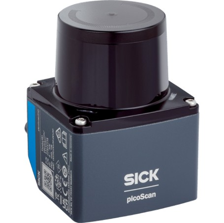

Setting up the LIDAR (PICS150-01000 Core-1)
Done as from 15/04/2026 11:53 . Revert the repository to get the working version that was quoted in the documentation.
{kind=link}

The driver for the LIDAR used can be installed from binary packages. Lets get started by cloning the repository.
sudo apt update
sudo apt-get install ros-humble-sick-scan-xd
Note
The IP Address of the LIDAR is: 192.168.0.1
In order to use the LIDAR, it has to have a correspondent subnet with your PC. Across the
LAN, both your computer and LIDAR will have a dedicated IP address. This address is malleable
unlike its MAC address. The LIDAR should already have been flashed with a default IP address
(192.168.0.1). To facilitate connection, ensure that the computer shares the same subnet
mask and subnet convolution pair with the device.
In this case: IP = 192.168.0.100 | Netmask 255.255.0.0 | Conv Pair = 192.168.0.0
(the subnet is arbitrarily chosen as it is unused).
If this fails, it means that the LIDAR’s IP address is not set up correctly. Follow the steps below before continuing.
Note
Download SOPAS ET (Sick sense LIDAR utility) and set up the ethernet port to follow the
same rule convention above. You can then set up a suitable IP address (basically the default
IP address) and a computer IP of 192.168.0.100. With the correct netmask, you should
obtain a connection and get the IP address reconfigured.
Now you should be able to connect.
ROS2 Service Line:
ros2 launch sick_scan_xd sick_picoscan.launch.py hostname:="Device IP Address (Default 192.168.0.1 for LIDAR)" udp_receiver_ip:="Computer IP Address that you can change"
The setup for this PC:
ros2 launch sick_scan_xd sick_picoscan.launch.py hostname:="192.168.0.1" udp_receiver_ip:="192.168.0.111"